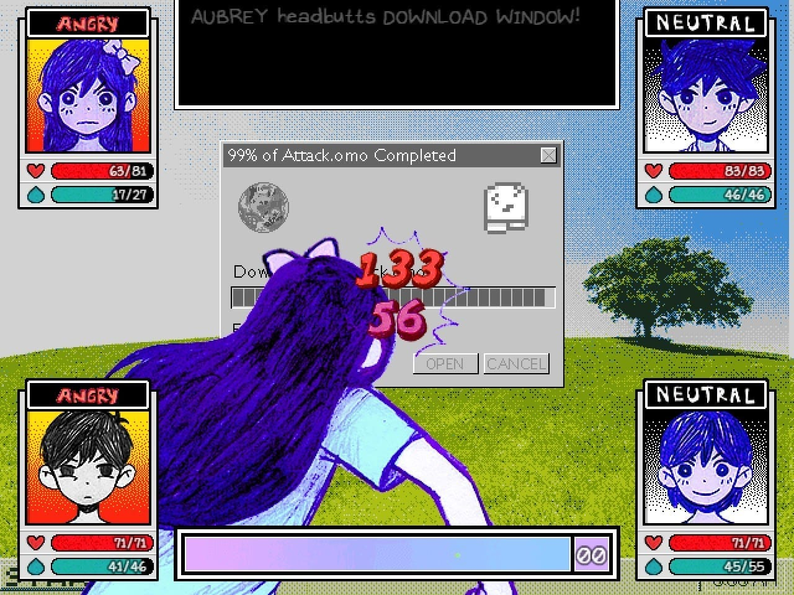
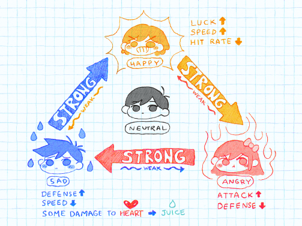
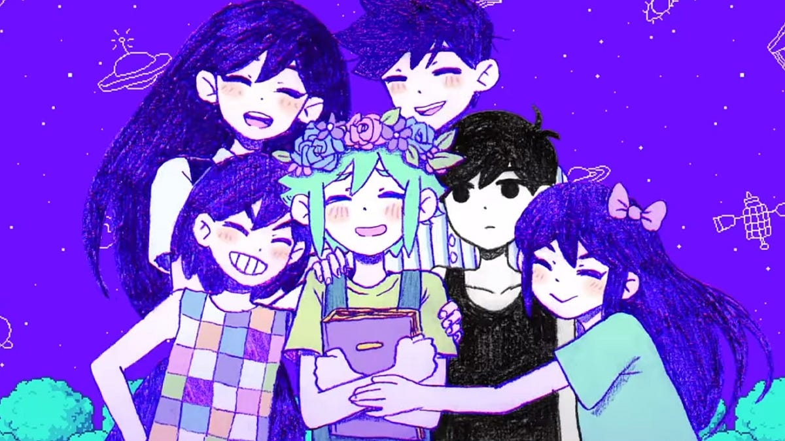
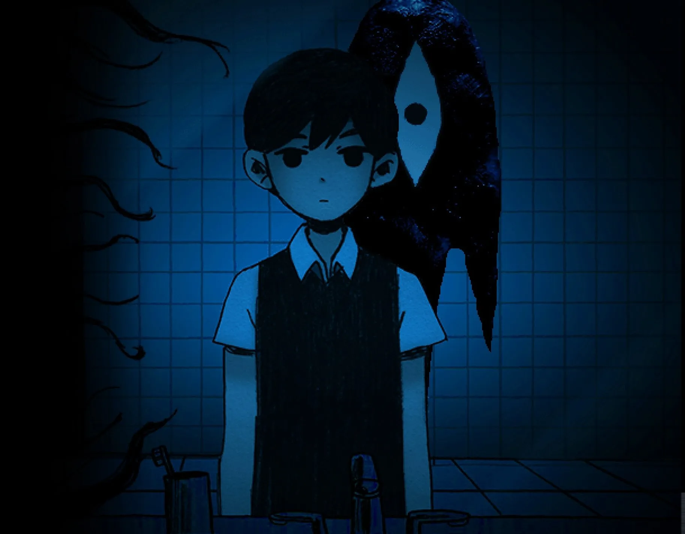
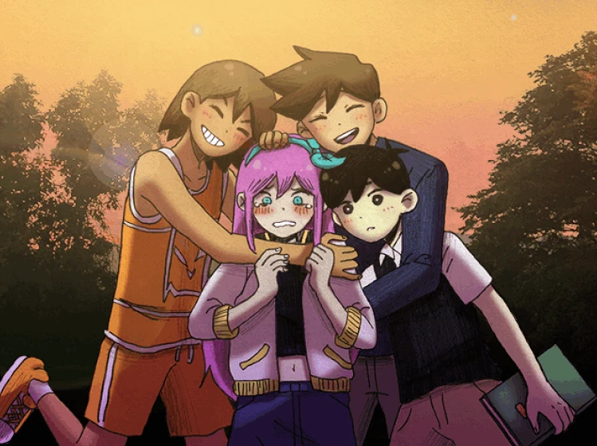
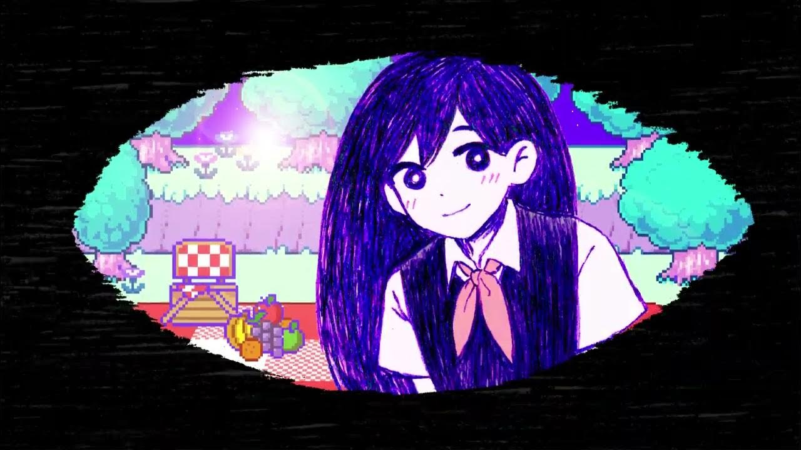
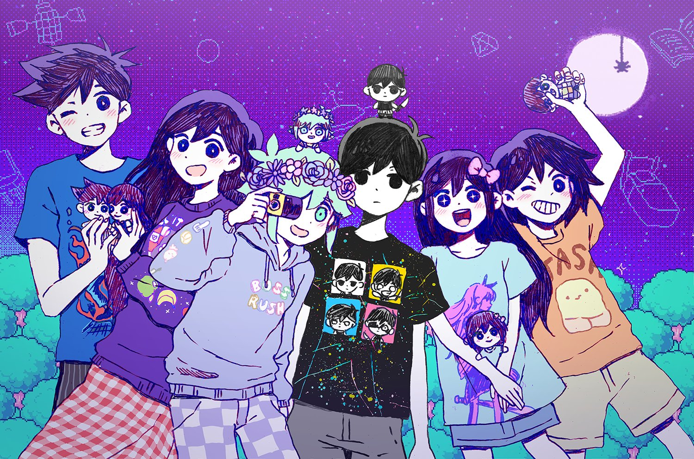
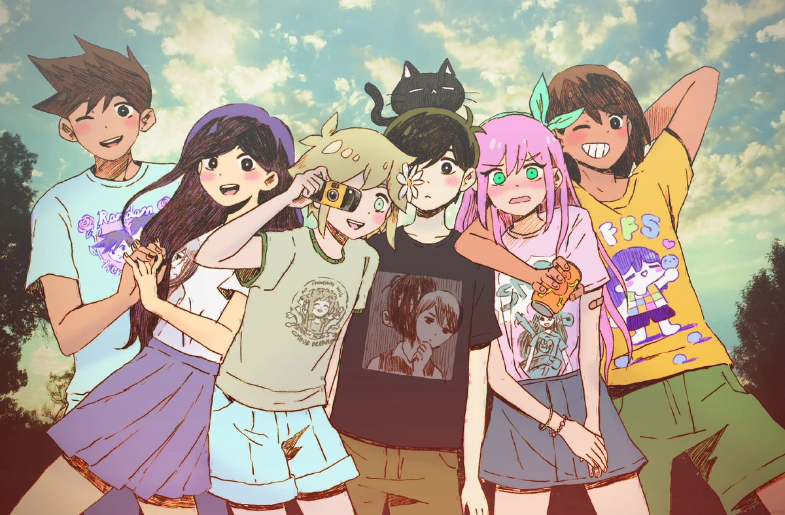

Gameplay
OMORI intertwines traditional top-down JRPG elements with psychological horror, and encourages players to traverse the
convoluted world forged by a mind grappling with grief and loneliness. Although featuring a relatively standard turn-based
combat system, the interesting-looking enemies, challenging boss fights, and fun character-specific attacks keep things feeling
fresh while you strive to move the story forward. On top of turn-based combat, exploration, and side-questing, combat is made
more complex through the following two mechanics: EMOTIONS, in which friends and foes alike are affected by varying and
leveling emotional statuses that are strong against one and weak against another, and FOLLOW-UPs: powerful skills that show off
the developing relationships between each of the characters in the party. These two mechanics also serve a thematic role,
reflecting the effect of emotional reactions on oneself and others, as well as the importance of developing healthy
relationships with others, regardless of how hard that may be.


Art
A visual embodiment of its theme of grief and healing, the visuals in OMORI oscillates between a childlike, colorful artstyle
and a grounded, occasionally horrifying one. This contrast vividly captures the essence of the emotional struggle of
experiencing loss during one's adolescence, another one of the game's major themes. Another potential interpretation I can
personally draw from this contrast is how human lives (originally happy, good, innocent) are affected by the knowledge or fear
of mortality, terrifying but nonetheless unavoidable. This artistic style is not limited to the backgrounds and setpieces, but
further extends to character design. The characters in OMORI are cute, memorable, and lovable, yet another stark contrast to
the realistic struggles they may suffer through despite their cartoonish and simple appearance.


Story
At its core, the story of OMORI is an exploration of the experience, coping of, and eventual acceptance of loss. You play as a
young, introverted shut-in who grew up happy with a group of friends that became fragmented when one of them unexpectedly
passes away. Throughout the game, the protagonist is presented with the choice of continuing a life of deceit, stuck trapped in
the past, or fighting to move on and face the truth of reality. Choosing the former means spending more time in HEADSPACE, the
fictional dream world within the mind of the protagonist where he is able to relive the wholesome life he once had. The latter
choice offers the opportunity to confront the once-happy group of friends and help them move on from their pain. I feel that
anyone living in the shadow of unresolved pain may see their struggles reflected in the protagonist's journey, and once offered
me insight into the importance of confronting painful truths and the power of acceptance.


Characters
The main characters in OMORI are beautifully flawed, each bearing their own burdens, all the while bound together through the
grief they share. The protagonist, along with MARI, HERO, KEL, AUBREY, and BASIL, represent the spectrum of coping mechanisms
people may employ in the face of trauma. The journey of each character reflects that of the player throughout the game,
allowing us to follow their struggles and growth. It was for this reason that I found it extremely easy to become attached to
these characters. Alongside this growth and development, the characters of OMORI each possesses an element of charm that makes
them individually unique!

